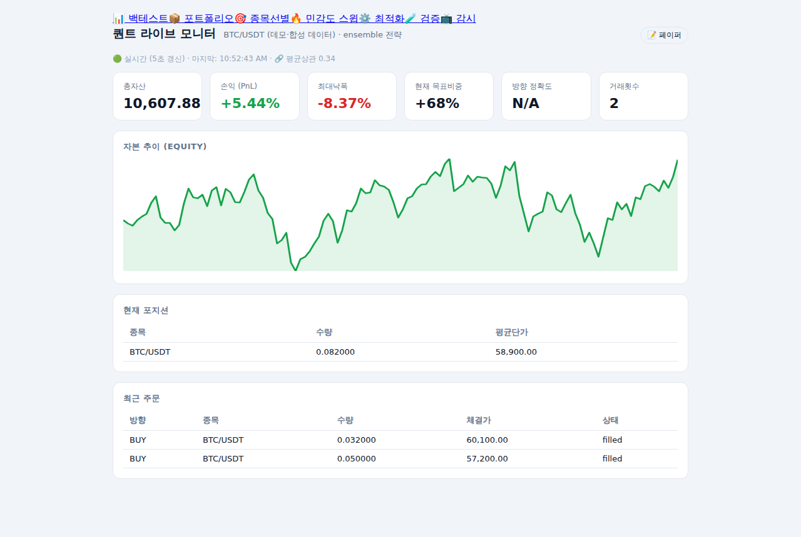
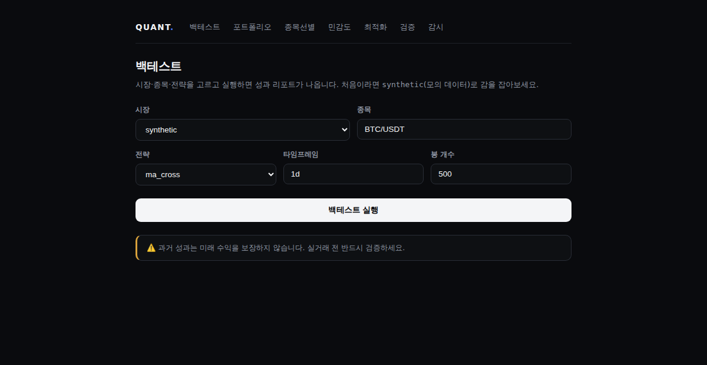
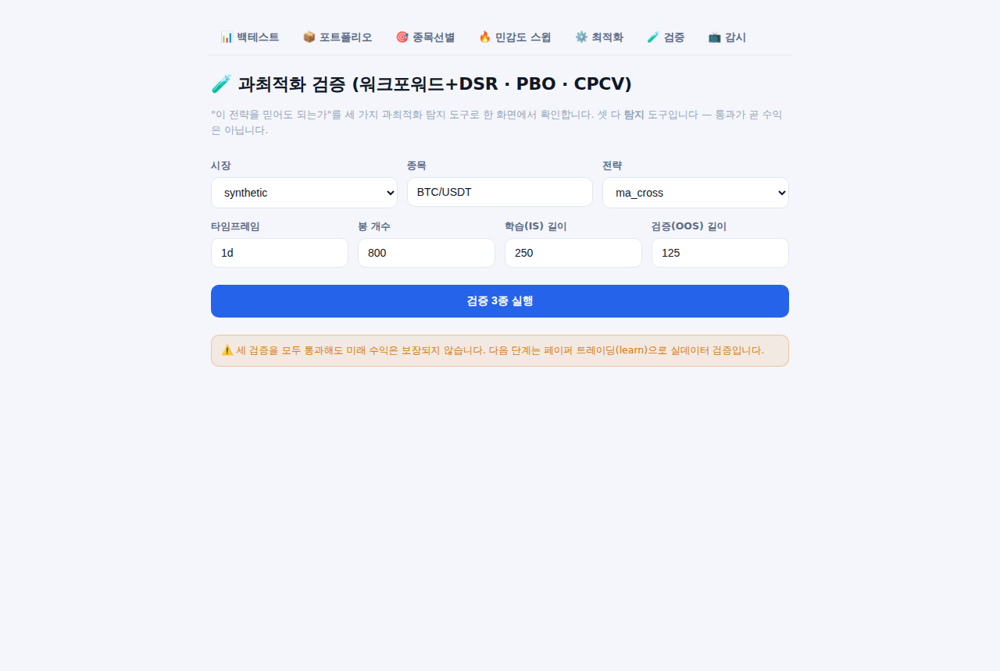

백테스트 · 과최적화 검증(워크포워드·PBO·CPCV) · 자동 페이퍼 트레이딩 · 리스크 관리.
받자마자 더블클릭 — 브라우저에 조종석이 열립니다.
✓ 백테스트·검증·페이퍼 트레이딩은 API 키·회원가입 없이 바로 됩니다
Features
워크포워드+DSR·PBO(과적합 확률)·CPCV(다중 OOS 경로). "이 전략을 믿어도 되는가"를 클릭 한 번으로 — 통과 못 한 전략은 실전에 못 올라가게 설계.
봉 내 손절 체결·시장충격·펀딩비·한국주식 거래세 프리셋까지 반영. '백테스트에서만 좋은' 전략의 환상을 걷어냅니다.
변동성 타겟팅·손절/트레일링·일일 최대손실 킬스위치·서킷브레이커· 포트폴리오 VaR/CVaR. '돈을 잃지 않는 것'이 복리의 핵심.
가상 자금으로 전략을 실데이터에 돌리며 정확도를 추적. 실거래 전 필수 관문 — 실제 주문은 검증을 마친 뒤 본인 판단으로.
12개 전략 + ML(확률 보정·드리프트 감지) + 상관 인지(HRP) 앙상블. 중복 전략 과대 가중 같은 흔한 함정을 구조적으로 회피.
브라우저에서 클릭으로 백테스트·검증·감시. 자본곡선·포지션·주문이 실시간 갱신. 전부 내 PC에서 — 데이터는 밖으로 나가지 않습니다.
Screens



Get started
1. 위에서 본인 OS용 파일 받기 · Windows → .exe (바로 실행) · mac/Linux → zip (압축 해제) 2. quant-cockpit 더블클릭 3. 브라우저에 조종석 자동 오픈
Windows "PC 보호" 경고는 서명 없는 개인 빌드라 뜨는 것 — [추가 정보] → [실행] 으로 진행하세요.
git clone https://github.com/tobe2111/insta-story-downloader cd insta-story-downloader ./start.sh # 윈도우: start.bat
필요 라이브러리 자동 설치 + 조종석 자동 실행.
업데이트는 git pull 한 줄.
FAQ
모릅니다 — 그리고 "무조건 수익"이라 말하는 도구는 전부 거르세요. 이 도구가 하는 일은 전략이 과최적화(운)인지 아닌지를 워크포워드·PBO·CPCV로 검증하고, 손실을 제한하는 리스크 장치를 제공하는 것까지입니다. 방향 예측 정확도의 현실적 상한은 52~55%입니다.
백테스트·검증·페이퍼 트레이딩에는 아무것도 필요 없습니다(공개 시세 사용).
실거래 주문·텔레그램 알림을 쓸 때만 해당 서비스의 키가 필요하고,
내장 설정 마법사(python -m quant setup)가 저장·연결 확인까지 해줍니다.
아니요. 모든 계산·상태 저장은 내 PC 안에서만 이뤄집니다. 외부 통신은 시세 수신(거래소·야후 공개 API)과 본인이 설정한 알림 발송뿐입니다.
실행파일 사용자는 이 페이지에서 새 버전을 다시 받으면 됩니다(버튼은 항상
최신을 가리킴). 개발자는 git pull 또는 동봉된 update 스크립트.
권장하지 않습니다. 내장 검증 3종을 통과한 전략만, 최소 2~4주 페이퍼 트레이딩으로 확인한 뒤, 잃어도 되는 소액부터 시작하세요. 거래소 API 키는 반드시 출금 권한을 끄고 발급하세요.